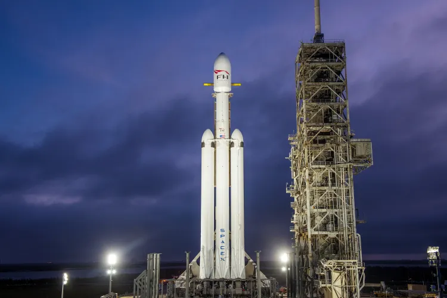

History
SpaceX, or Space Exploration Technologies Corp., was founded in 2002 by Elon Musk. The company's goal was to make space transportation affordable and one day establish humans as a multiplanetary species.
SpaceX began designing their first rocket called Falcon 1. At first, they failed several times until in 2008, Falcon 1 reached orbit for the first time. This was the first privately developed liquid-fueled rocket to reach orbit.
Early Achievements
SpaceX continued to develop larger rockets and spacecraft after their success with Falcon 1. The Falcon 9 launched in 2010, and their first spacecraft was the "Dragon" which is used to reach the International Space Station.
The Dragon spacecraft helped establish a direct partnership with NASA, as they regularly use the Dragon spacecraft for cargo missions and to return back to Earth.
Early Milestones
- 2002- SpaceX founded
- 2008- Falcon 1 reaches orbit
- 2010- Falcon 9 launches
- 2012- Dragon spacecraft docks with ISS
